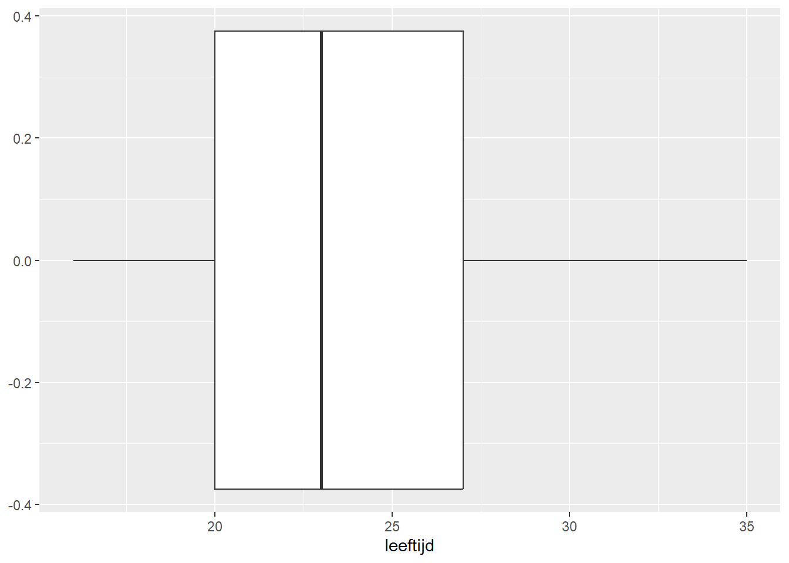

# handmatig gemiddelde berekenen
(16 + 22 + 22 + 28 + 33) / 5[1] 24.2Inmiddels zijn we bekend met datasets, observaties, variabelen, meetniveaus en figuren. We hebben ook benoemd dat statistiek draait om het analyseren van variatie met behulp van de variabelen die in onze dataset zitten. Denk aan: variatie in drugsgebruik, leeftijden en opleidingsniveau. Om de variatie te analyseren maken we gebruik van diverse centrum- en spreidingsmaten. De meeste hiervan zul je herkennen van eerdere wiskundelessen die je hebt gehad.
Het gemiddelde (\(\bar{x}\)) berekenen we simpelweg door voor de variabele \(x\) alle observaties bij elkaar op te tellen \(\sum_{i=1}^n{x_i}\) en dan te delen door het aantal observaties \(n\). Dit gaat middels de volgende formule.
\[ \bar{x}=\frac{\sum_{i=1}^{n}{x_i}}{n} \]
Formules berekenen en statistische toetsen uitvoeren kunnen we ook handmatig in R doen. Dit is leerzaam, omdat het intuïtie creëert voor hoe je statistisch onderzoek moet uitvoeren.
Stel we nemen vijf respondenten uit de dataset en bekijken hun leeftijd. We vinden de volgende observaties voor leeftijd: 16, 22, 22, 28 en 33.
Hieronder berekenen we in R de gemiddelde leeftijd van deze vijf respondenten.
# handmatig gemiddelde berekenen
(16 + 22 + 22 + 28 + 33) / 5[1] 24.2De gemiddelde leeftijd van deze vijf respondenten is is dus 24,2. In plaats een handmatige berekening kun je het ook berekenen middels een functie in R:
# vector aanmaken
x <- c(16, 22, 22, 28, 33)
print(x)[1] 16 22 22 28 33# gemiddelde berekenen
mean(x)[1] 24.2Eerst hebben we een vector, of eigenlijk een variabele, aangemaakt met de vijf observaties. Via de functie mean() bereken je vervolgens het gemiddelde.
De mediaan is het getal waar het midden van het aantal observaties is bereikt (50%), oftewel de middelste observatie.
Bij de leeftijdsreeks (16, 22, 22, 28, 33) is dit 22 jaar.
Bij een even aantal cijfers zoals (16, 22, 22, 25, 28, 33) neem je het midden van de middelste twee getallen. In dit geval is dat 23,5 (tussen 22 en 25 jaar).
In R bereken je de mediaan via de functie median().
# oneven aantal observaties
median(x)[1] 22# even aantal observaties
y <- c(16, 22, 22, 25, 28, 33)
print(y)[1] 16 22 22 25 28 33median(y)[1] 23.5De modus is de waarde die het vaakst voorkomt in een variabele.
Bij de leeftijdsreeks (16, 22, 22, 28, 33) is dit 22 jaar omdat deze leeftijd tweemaal voorkomt en de rest slechts één keer.
R bereken je de modus via de functie mfv().
# package laden
library(modeest)
# modus berekenen
mfv(x)[1] 22Tekst toevoegen over belang spreiding
Het bereik \(R\) van een variabele is de afstand tussen laagste (minimum: \(x_{min}\)) en hoogste (maximum: \(x_{max}\)) waarde. Dit bereken je eenvoudig door de laagste waarde minus de hoogste waarde te nemen:
\[R=x_{min}-x_{max}\]
Bij de leeftijdsreeks (16, 22, 22, 28, 33) is het minimum 16 en het maximum 33. Het bereik is dus \(R=x_{min}-x_{max}=33-16=17\)
# handmatig bereik berekenen
33 - 16[1] 17De kunt in R het minimum en maximum opvragen met functies min() en max(). Ook kun je allebei tegelijk krijgen met de functie range()
# minimum opvragen
min(x)[1] 16# maximum opvragen
max(x)[1] 33# minimum en maximm opvragen
range(x)[1] 16 33De functie range() geeft je alleen het minimum en maximum. Als je het bereik wilt weten, moet je zelf het minimum van het maximum aftrekken:
# bereik berekenen
max(x) - min(x)[1] 17De variantie is een maat voor de spreiding van een variabele die aangeeft hoeveel de waardes onderling van elkaar verschillen. In de statistiek van de sociale wetenschappen zijn er twee soorten variantie: de populatievariantie en steekproefvariantie. Hier komen we later op terug, we rekenen nu voorlopig verder met de steekproefvariantie. De formule daarvoor is:
\[ S^2=\frac{\sum_{i=1}^{n}{(x_i-\bar{x})^2}}{n-1} \] De steekproefvariantie \(S^2\) kun je bereken in een aantal stappen.
Dit doen we aan de hand van de leeftijdsreeks (16, 22, 22, 28, 33) en het gemiddelde hiervan \(\bar{x}=24,2\)
Eerst berekenen we voor elke observatie de afstand tot het gemiddelde (de deviatie):
| \(x_i\) | \(x_i-\bar{x}\) |
|---|---|
| 16 | 16 - 24,2 = -8,2 |
| 22 | 22 - 24,2 = -2,2 |
| 22 | 22 - 24,2 = -2,2 |
| 28 | 28 - 24,2 = 3,8 |
| 33 | 33 - 24,2 = 8,8 |
De optelsom van alle deviaties moet altijd nul zijn: -8,2 + -2,2 + -2,2 + 3,8 + 8,8 = 0
In de volgende stap kwadrateren we alle deviaties:
| \(x_i\) | \(x_i-\bar{x}\) | \((x_i-\bar{x})^2\) |
|---|---|---|
| 16 | 16 - 24,2 = -8,2 | \((-8,2)^2 = 67,24\) |
| 22 | 22 - 24,2 = -2,2 | \((-2,2)^2 = 4,84\) |
| 22 | 22 - 24,2 = -2,2 | \((-2,2)^2 = 4,84\) |
| 28 | 28 - 24,2 = 3,8 | \(3,8^2 = 14,44\) |
| 33 | 33 - 24,2 = 8,8 | \(8,8^2 = 77,44\) |
Daarvan nemen we de som der kwadraten ( \(\sum_{i=1}^{n}{(x_i-\bar{x})^2}\) ) : 67,24 + 4,84 + 4,84 + 14,44 + 77,44 = 168,8
In de laatste stap delen we de som der kwadraten door het aantal observaties minus één (\(n-1\)) :
168,8 / (5-1) = 42,2
De steekproefvariantie van de leeftijd van vijf respondenten is dus 42,2.
Deze stappen kunnen we ook in R uitvoeren.
# deviatie voor elke leeftijd
x_deviatie <- x - mean(x)
print(x_deviatie)[1] -8.2 -2.2 -2.2 3.8 8.8# kwadrateren van deviaties
x_deviatie_kwa <- x_deviatie^2
print(x_deviatie_kwa)[1] 67.24 4.84 4.84 14.44 77.44# som der kwadraten
sum(x_deviatie_kwa) # sum() neemt de som van een vector[1] 168.8# steekproefvariantie berekenen
variantie_stkpr <- sum(x_deviatie_kwa) / (length(x) - 1) # length() berekent het aantal rijen
print(variantie_stkpr)[1] 42.2In R kun je met de functie var() de steekproefvariantie ook direct berekenen
# steekproefvariantie
var(x)[1] 42.2De variantie is een handig getal om mee te rekenen, maar heeft meestal op zichzelf niet zoveel betekenis. Daarom wordt in onderzoek gebruik gemaakt van de standaarddeviatie (ook wel standaardafwijking genoemd). In combinatie met het gemiddelde en het bereik, geeft de standaarddeviatie meestal wel een redelijke indicatie van de spreiding van een lineair variabele (hier komen we later weer op terug). Hoewel wiskundig niet helemaal correct, wordt de standaarddeviatie ook wel gezien als ‘de gemiddelde afstand tot het gemiddelde’.
De standaarddeviatie is de wortel van de steekproefvariantie:
\[ S=\sqrt\frac{\sum_{i=1}^{n}{(x_i-\bar{x})^2}}{n-1} \]
De standaarddeviatie van ons voorbeeld met de leeftijd van vijf respondenten is:
\(S=\sqrt{42,2}=6,50\)
# standaarddeviatie berekenen
sqrt(variantie_stkpr) # sqrt() berekent de wortel over een getal/vector[1] 6.496153Je kunt de standaarddeviatie ook direct in R krijgen met sd()
# standaarddeviatie
sd(x)[1] 6.496153We hebben hierboven middels een eenvoudig voorbeeld laten zien hoe de centrum- en spreidingsmaten berekend worden. In onderzoek willen we deze informatie voor variabelen in de hele dataset weten, zodat we snel kunnen zien hoe onze data in elkaar zit.
We vragen hier het gemiddelde, de mediaan en de modus op voor leeftijd in de dataset.
# laden package
library(readr)
# laden van de data
data <- read_rds("data/middelengebruik_uitgaanders.rds")
# centrummaten opvragen
mean(data$leeftijd) # gemiddelde[1] 23.52median(data$leeftijd) # mediaan[1] 23mfv(data$leeftijd) # modus[1] 22De gemiddelde leeftijd is 23,5 jaar, de mediaan is 23 jaar en de modus is 22 jaar. Deze waarden liggen dus dicht bij elkaar.
We kunnen ook het minimum, maximum, bereik en standaarddeviatie berekenen.
# spreidingsmaten opvragen
range(data$leeftijd) # minimum en maximum[1] 16 35max(data$leeftijd) - min(data$leeftijd) # bereik[1] 19sd(data$leeftijd) #standaarddeviatie[1] 4.782178De minimumleeftijd is 16 jaar, de maximumleeftijd is 35 jaar en het leeftijdsbereik is 19 jaar. De standaarddeviatie is 4,8 jaar.
Veel van deze statistieken (min, max, mediaan, gemiddelde) kun je ook in één keer bekijken middels de functie summary()
# meerdere statistieken tegelijkertijd opvragen
summary(data$leeftijd) Min. 1st Qu. Median Mean 3rd Qu. Max.
16.00 20.00 23.00 23.52 27.00 35.00 Je ziet dat de summary() functie ook de waardes voor 1st Qu. en 3rd Qu. geeft. Dit zijn het eerste en derde kwartiel, de grenzen waarbij respectievelijk 25% (Q1) en 75% (Q3) van de data ligt. In dit geval dus 20,0 en 27,0 jaar. Het tweede kwartiel (Q2) is de mediaan, dit is op de grens van 50% van de data.
Ten slotte is er ook een manier om de spreiding van een lineaire variabele te visualiseren. Dit is via een doosdiagram.
# laden package
library(ggplot2)
# doosdiagram maken
ggplot(data, aes(x = leeftijd)) +
geom_boxplot() # doosdiagram
De presentatie kan nog verbeterd worden.
# laden package
library(ggplot2)
# doosdiagram maken
ggplot(data, aes(x = leeftijd)) +
geom_boxplot() + # doosdiagram
theme_bw() +
scale_x_continuous(breaks = seq(16, 35, by = 1))
Toepassing op dataset
\[ \sigma^2=\frac{\sum_{i=1}^{n}(x_i-\mu)^2}{N} \]
\[ z=\frac{x-\bar{x}}{S} \]
\[ s.e. =\frac{S}{\sqrt{n}} \]